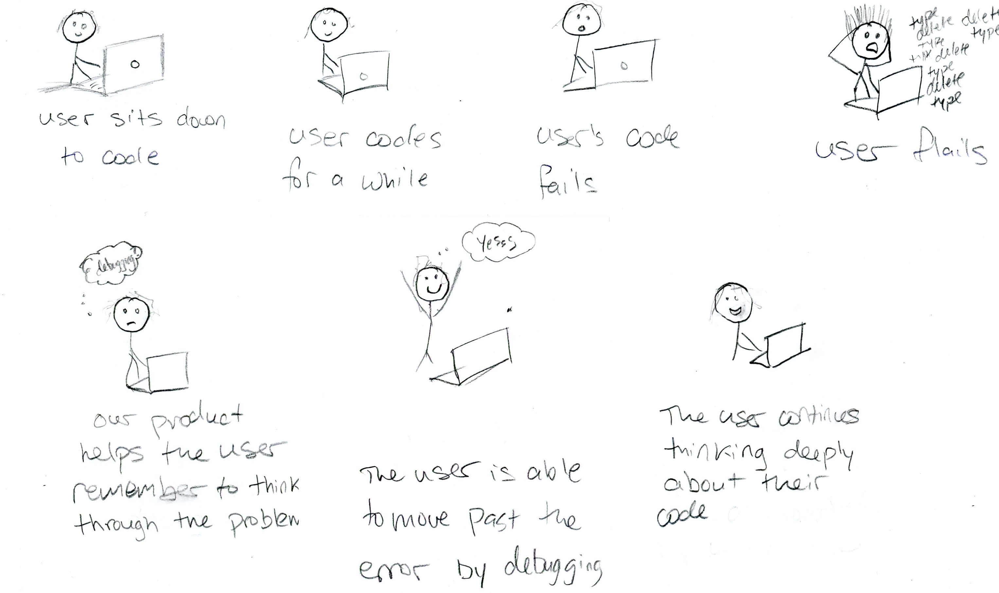

Research has shown that rewarding or promoting a growth mindset in math has increased user engagement time, users’ quality and quantity of problem solving strategies, and users’ perseverance when faced with challenge.
Growth mindset interventions have been shown reduce the gender achievement gap in math and in general, promote better learning outcomes.
The team consists of Elenore O'Rourke, a Northwestern Professor, two other students, and myself. We are working on building a text editor that reinforces the growth mindset as users code. We hypothisize this will have similar outcomes as promoting the growth mindset in math.
We applied for and recieved a Undergraduate Research Grant.
Above is a journey map I drew, showing an ideal outcome
One of the main questions we are trying to answer is, can you detect the growth mindset while people are coding from keystroke and click data? This is necessary if we want to reward and reinforce the growth mindset.
Our first study was an attempt to find answers to that question. We observed 7 students who had already taken one Computer Science class and were currently in an intro to python class. We observed them coding and recorded face and screen capture videos as well as keystroke data.
We built an atom package, named Keystrokes, that recorded the keystroke data locally.
We qualitatively coded the videos and wrote python scripts to analyze the data. From this study, we found two detectable metrics to indicate the growth mindset that were consistent with our hypotheses.
We will continue building on the inital growth mindset metrics and inproving the robustness of our detection code. We will also begin prototyping and testing the growth mindset reward method.